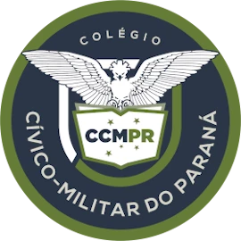

Ser
Valores, cidadania, respeito e convivência.

Colégio Estadual Cívico-Militar Antonio Diniz PereiraEdição 2025
Feira
Nos dias 27 e 28 de novembro de 2025, o colégio organiza sua feira de ciências para apresentar os projetos do ano.
<>O nome da feira resume o que o colégio quer formar: pessoas com valores, com conhecimento e com iniciativa.
Valores, cidadania, respeito e convivência.
Conhecimento, pesquisa e curiosidade.
Iniciativa para transformar ideias em ação.
Uma feira escolar dura poucos dias, mas o que ela movimenta começa muito antes e continua depois. Por trás de cada trabalho tem pesquisa, ensaio, erro, ajuste e muita conversa entre alunos e professores.
Na sala de aula, o conteúdo chega pelo professor. Na feira, o caminho se inverte: são os alunos que pesquisam, testam e montam o trabalho. Quando precisam explicar o que fizeram para alguém de fora, descobrem o que realmente entenderam, e o aprendizado fica de um jeito que a prova sozinha não consegue.
Receber visitantes, falar em público e responder perguntas exige preparo e confiança. Dividir tarefas, cumprir prazos e cuidar do próprio espaço são exercícios de responsabilidade, valores que fazem parte da formação de um colégio cívico-militar.
Empreender não é só abrir um negócio. É olhar para um problema, imaginar uma solução e ter iniciativa para colocá-la em prática. A feira dá aos alunos a chance de planejar, organizar e mostrar algo que eles mesmos criaram.
Quando famílias e comunidade entram no colégio, veem de perto o que os alunos estão aprendendo. Esse encontro aproxima escola e família e mostra aos estudantes que o esforço deles é reconhecido.
Abertura oficial da feira no colégio.
Dia aberto para famílias e comunidade conhecerem os trabalhos dos alunos.
Fotos da feira, eventos, avisos e o dia a dia dos alunos. Acompanhe tudo pelo perfil oficial.
Clique em uma foto para ampliar.
Obrigado aos alunos, professores, funcionários e famílias que fizeram a feira acontecer. Até a próxima edição.